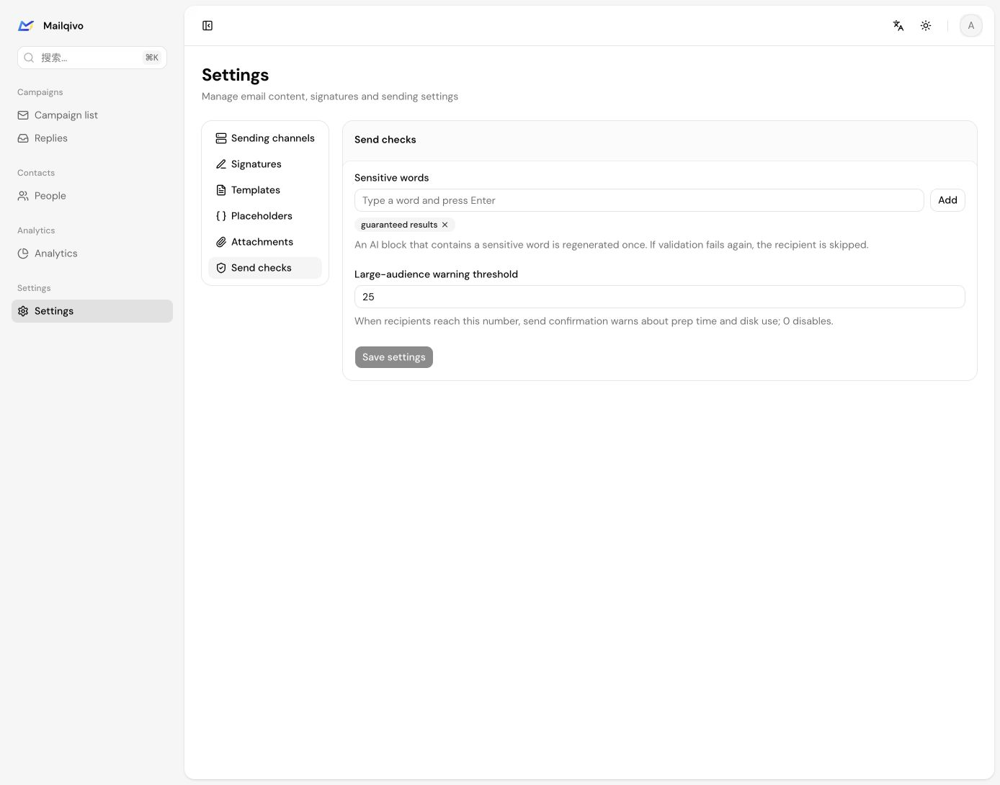
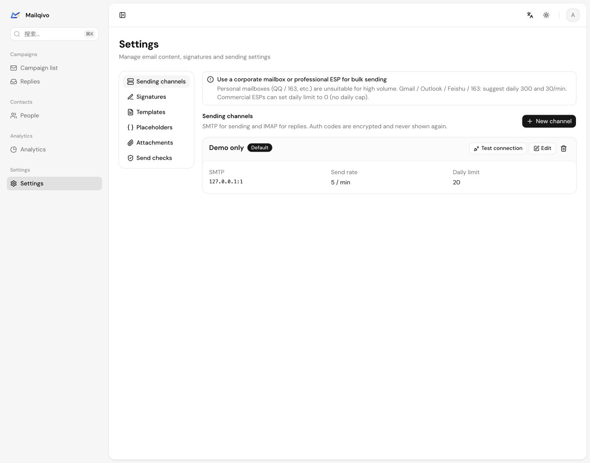
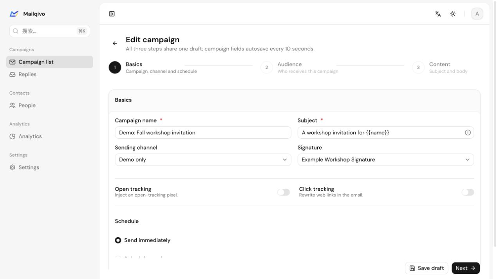
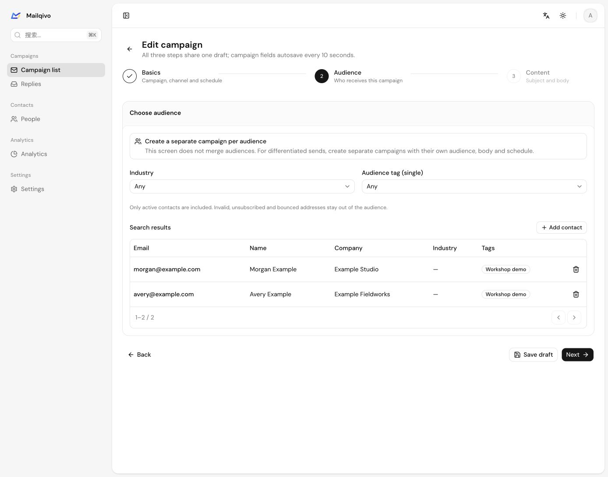

Set up the workspace
Follow the installation instructions or run the sample workspace. Open Mailqivo from Codex or sign in to the web console.
- Use the Language menu to select English (UK). The button names in this guide follow that interface.
- Open Settings → Sending channels → New channel. Configure your sender and SMTP settings. Add IMAP settings if you want to retrieve replies.
- Under Send checks, review Sensitive words and the Large-audience warning threshold.
- Open People to add contacts or import them from Excel or CSV.


Prepare and preview a campaign
- Open Campaign list → New campaign. In Basics, enter the campaign name and subject, choose a sending channel, and select Send immediately or Schedule send. Select Next.
- In Audience, choose an industry or an audience tag as needed. Select Confirm search when prompted. Review Search results, add or remove contacts as needed, and select Next. Changing the filters and confirming again resets manual additions and removals.
- In Content, edit the subject and body. Use Insert variable for contact-specific text, then select Save draft.
- In Codex, ask Mailqivo to preview the saved campaign for sample contacts. Review each personalized subject and body before delivery.



In the sample workspace, stop at preview. In a live workspace, Test send delivers a real email to the test address you enter. To send the campaign from the web console, choose Send, review the schedule, audience, and channel quota, then select Confirm send.
Review results and replies
For unsubscribe links, use the local demo and self-hosting instructions. The hosted WentongCloud unsubscribe service serves WentongCloud campaigns.
From Campaign list, open a campaign to review its status and delivery totals. In Replies, select a message to read it, then use Mark handled once you have reviewed it. You can also ask Mailqivo in Codex to summarize unhandled replies and suggest follow-up.